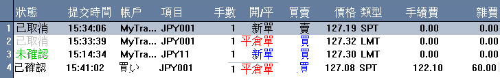

工作列表
該面板顯示所有的已確認、未經確認的和已被取消的限價單。

-
狀態 - 執行狀態，其中包含下類型：
未確認 - 該指令善未經交易所確認成交，並且以綠色
未確認
狀態顯示。
已確認
- 該指令已經交易所確認成交，並以黑色 已確認 狀態顯示。
已取消 - 由於某些原因交易指令不能按預定成交，而被子取消，則顯示爲灰色
已取消
。
該面板將以上述狀態顯示，直到用戶退出系統爲止。
-
提交時間 - 基於指令狀態，顯示指令提交或成交時間。
-
帳戶 - 交易帳戶
-
项目 - 交易项目。
-
手數 - 交易指令數量。
-
開/平 - N 表示新開倉指令 C 表示平倉指令。
-
買賣 - B B 表示買指令 S 表示賣指令。
-
價格 - 基於指令狀態，顯示爲設置交易指令時的價格。
-
類型 - 指令所屬交易類型。
-
手續費 - 手續費。
-
雜費 - 雜費。
用戶想得到更多信息，可根據下面步驟完成：
用戶可以雙擊想要操作的指令，打開未經確認指令信息對話框：
-
1. 序列號 - 指令序列號。
-
2. 項目 - 交易項目。
-
3. 價格 - 成交價格。
-
4. 買賣 -
指出該合約是買指令或是賣指令，若爲買指令則窗口顯示爲藍色，如果爲賣指令則窗口顯示爲紅色。
-
5. 數量
- 開倉合約數量
-
6. 帳戶 - 交易帳戶。
-
7. 類型 - 指令所屬交易類型。
-
8. 選項 - 限價指令單的better或stop選項。
-
9. 提交時間 - 指令提交時間。
-
10 失效時間 - 指令未經確認的有效時間。
-
11 描述 - 平倉請求被接受時所有的交易盈虧描述。
-
12 開倉合約 - 開倉指令信息。
-
13
備註 - 返回指令交易狀態的系統信息。
-
14 取消 - 取消未確認狀態的Limit/Stop/MOC/MOO指令按鈕， 取消未成交指令.
-
15 清除列表 - 清除工作列表上的取消狀態的指令按鈕。
-
14 退出 - 退出當前對話框。